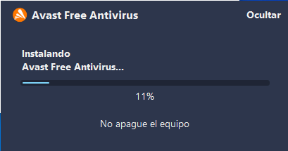
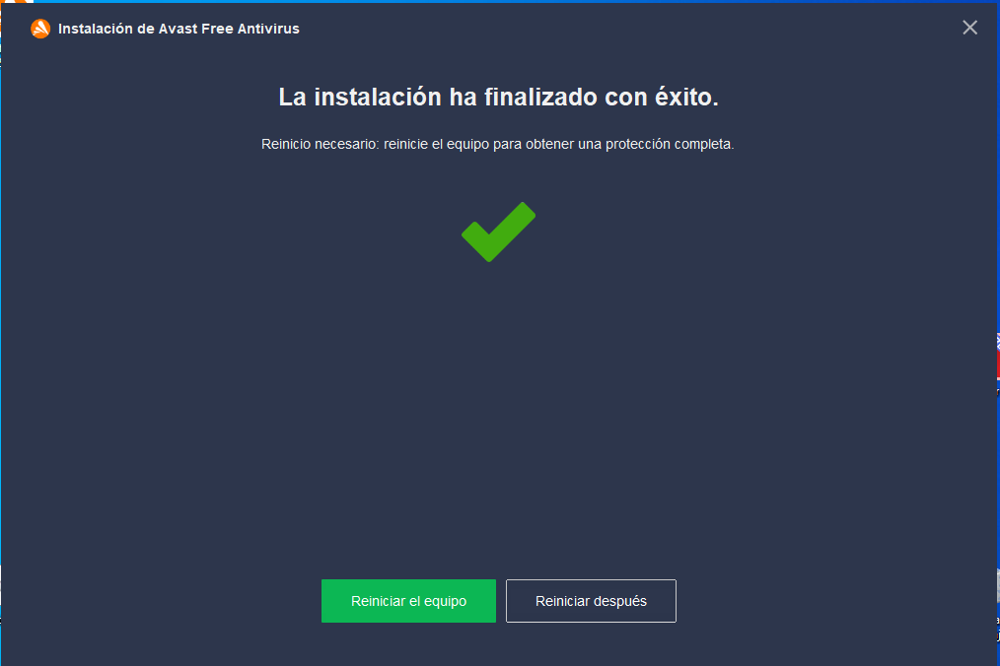

Antes de comenzar con la instalación de nuestro antivirus, lo primero que necesitamos es descargar el archivo que queremos instalar, para ello, clickando en Avast Antivirus iremos directamente a la página web de descarga.
Una vez hayamos descargado el archivo que nos teníamos que descargar, podremos proceder con la instalación. Para ello, buscaremos el ejecutable que hemos descargado y lo ejecutaremos como administradores. Hay que tener en cuenta que es importante no tener ningún otro antivirus descargado anteriormente porque podría generar incompatibilidades con esta nueva instalación. Una vez hayamos ejecutado el ejecutable de Avast se nos debería de abrir una ventana que nos dirá que instalemos Avast o que personalicemos las opciones que queremos que instale. En nuestro caso no personalizaremos la instalación y simplemente clickaremos en instalar para continuar.

Al haber hecho click en instalar, el programa comenzará a instalarse, nos aparecerá una nueva ventana que nos estará informando en tiempo real como va la instalación de nuestro antivirus por medio de una barra de progreso. En este paso solo nos queda esperar a que el proceso de instalación termine.
 Una vez el proceso de instalación haya terminado, o en este caso, que la barra de progreso haya llegado al máximo y esté completamente terminada tan solo nos quedaría reiniciar nuestra máquina para así dejar que los servicios de Avast se instalen correctamente y el antivirus esté completamente instalado en nuestro ordenador.